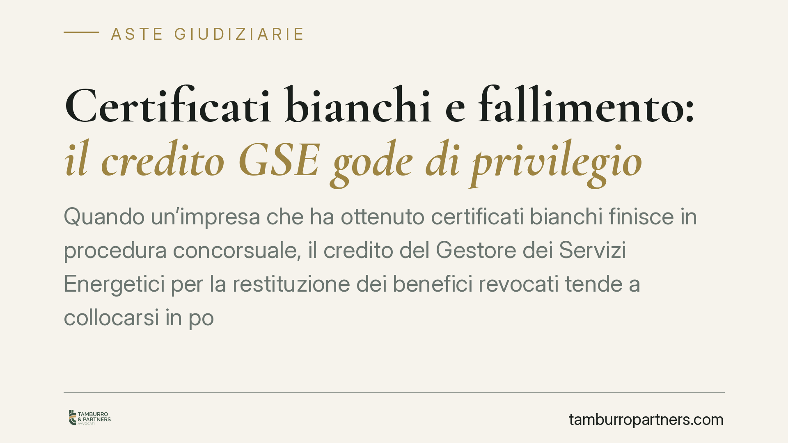

Certificati bianchi e fallimento: il credito GSE gode di privilegio
Quando un'impresa che ha ottenuto certificati bianchi finisce in procedura concorsuale, il credito del Gestore dei Servizi Energetici per la restituzione dei benefici revocati tende a collocarsi in posizione privilegiata. La questione ruota attorno alla natura del beneficio pubblico e incide direttamente sull'attivo distribuibile, sulla stima dei beni destinati all'asta e sulle strategie dei creditori chirografari.

Il contesto
I certificati bianchi, o Titoli di Efficienza Energetica (TEE), sono strumenti che attestano il risparmio energetico conseguito da un'impresa e possono generare benefici economici erogati con il concorso di risorse pubbliche, gestite tramite il Gestore dei Servizi Energetici (GSE) e la Cassa per i servizi energetici e ambientali (CSEA).
Quando l'impresa beneficiaria entra in una procedura concorsuale, si pone il problema di come classificare il credito che il GSE vanta per la restituzione di benefici indebitamente percepiti o revocati. La collocazione — privilegiata o chirografaria — determina l'ordine con cui quel credito viene soddisfatto sul ricavato della liquidazione.
Inquadramento normativo
Il riferimento operativo è l'art. 9, comma 5, del D.Lgs. 31 marzo 1998, n. 123, norma che disciplina i benefici pubblici alle imprese. La disposizione riconosce, in caso di revoca dei benefici, un privilegio a favore dell'ente erogatore sui crediti conseguenti alla restituzione delle somme.
Il privilegio è una causa legittima di prelazione che opera *ex lege*: non nasce da un accordo tra le parti né da un'iscrizione (come l'ipoteca), ma direttamente dalla legge, in ragione della qualità del credito. In sostanza, lo Stato — o l'ente che eroga risorse pubbliche — recupera prima di altri creditori i fondi destinati a finalità di interesse generale, qui l'efficienza energetica.
Una precisazione doverosa. L'orientamento che estende questo privilegio ai crediti del GSE derivanti da benefici sui TEE va verificato caso per caso: la riconducibilità del singolo credito al perimetro dell'art. 9, comma 5, dipende dalla natura del beneficio e dall'atto di revoca. In assenza di un'indicazione precisa e verificabile del provvedimento giurisprudenziale che ha affrontato la questione, questo contributo si limita a illustrare il quadro normativo e le sue implicazioni, senza attribuire una decisione specifica alla Corte.
Implicazioni pratiche
L'effetto principale è sull'attivo distribuibile. Un credito privilegiato viene soddisfatto prima dei crediti chirografari (quelli senza garanzie o prelazioni). Se il privilegio del GSE è ampio, la massa che residua per i chirografari si riduce, con una loro postergazione di fatto.
Per chi guarda alle aste giudiziarie, il punto è concreto. La stima dell'attivo effettivamente recuperabile va letta al netto dei crediti privilegiati che gravano sul ricavato. Un compendio immobiliare o aziendale può apparire capiente, ma se sul ricavato insistono privilegi rilevanti — tra cui, eventualmente, quello del GSE — il valore netto per i creditori di grado inferiore cambia in modo sensibile.
Per gli operatori del mercato delle aste questo significa una cosa sola: la convenienza di un'operazione non si misura sul prezzo di aggiudicazione, ma sulla struttura complessiva dei crediti che concorrono sul patrimonio del debitore.
I rimedi: due strumenti da non confondere
È frequente l'errore di trattare come equivalenti l'opposizione allo stato passivo e la domanda tardiva. Sono strumenti diversi.
Per le procedure aperte dopo il 15 luglio 2022 si applica il Codice della Crisi d'Impresa e dell'Insolvenza (D.Lgs. 14/2019, CCII); per quelle anteriori resta la legge fallimentare (r.d. 267/1942).
- L'opposizione allo stato passivo (art. 98 l.fall. / art. 206 CCII) contesta la decisione del giudice delegato su una domanda già presentata: il termine è di trenta giorni dalla comunicazione dell'esito.
- La domanda tardiva (art. 101 l.fall. / art. 208 CCII) serve invece a chi non ha presentato la domanda nei termini ordinari e vuole insinuarsi successivamente al credito, entro i limiti temporali di legge.
La scelta dello strumento dipende dalla posizione processuale in cui ci si trova, non da una preferenza discrezionale.
Cosa fare in concreto
- Verifica il grado dei crediti: prima di formulare un'offerta in asta, ricostruisci l'ordine dei privilegi che insistono sul ricavato, incluso l'eventuale credito GSE.
- Leggi lo stato passivo: controlla la collocazione attribuita al credito del GSE e la sua qualificazione (privilegiato o chirografario).
- Distingui i rimedi: se contesti la decisione del giudice delegato, agisci con l'opposizione nei trenta giorni; se sei un creditore rimasto fuori, valuta la domanda tardiva.
- Aggiorna il riferimento normativo: individua se la procedura segue la legge fallimentare o il CCII, perché cambiano termini e disciplina.
- Chiedi copia dei provvedimenti di revoca: la fondatezza del privilegio dipende dall'atto con cui il beneficio è stato revocato.
---
Contributo informativo a cura di Tamburro & Partners - Avv. Giuseppe Tamburro. Non costituisce parere legale.
Comprare bene all’asta si può.
Se vuoi acquistare un immobile all’asta in sicurezza o difendere un esecutato, scrivi allo studio. Ti rispondiamo entro un giorno lavorativo.